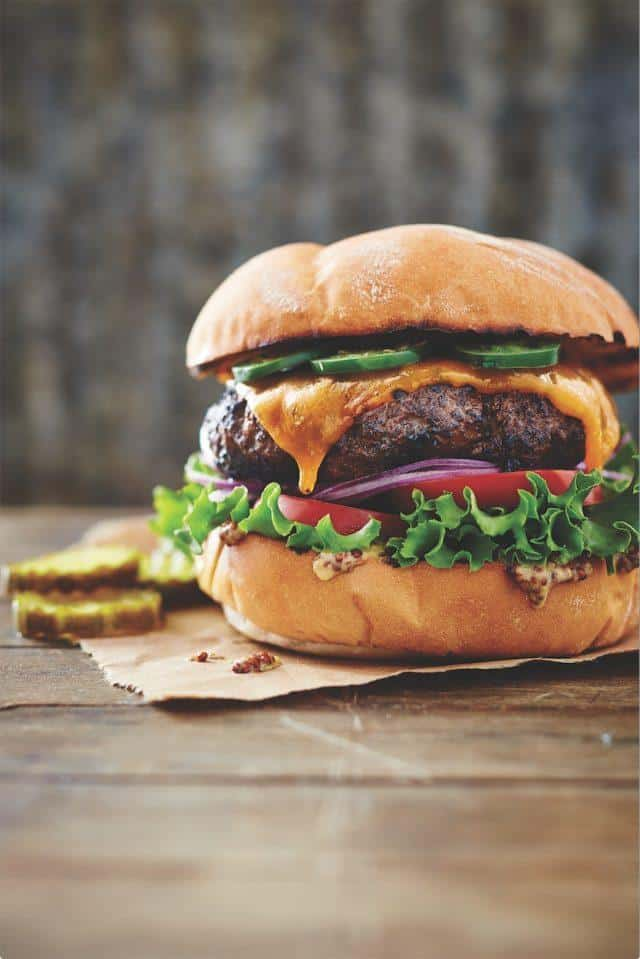

Texas Hamburger

When they say, in texas, everything is bigger, they aren't lying.
This is a texas hamburger, a pound and a half of chuck in between 2 hamburger buns,
with enough spice to keep the rounds of sweet tea comin'
Here's whatcha need partner
- 1 1/2 pounds of ground chuck
- 2 tablespoons Worcestershire sauce
- 1 tablespoon Texas Meat Rub
- 4 slices longhorn-style Cheddar cheese (3/4 ounces)
- 1 medium jalapeno pepper thinly sliced
- 4 Hamburger Buns
- 2 ounces butter (1/4 cup); softened
Who doesn't love toppings?
- coarse-grained mustard
- Leaf Lettuce
- Tomato slices
- Red onion slices
Now let's prepare it!
- Preheat the grill to 350° to 400°F (medium-high). Shape the ground chuck into 4 (4-inch) patties.
Drizzle the patties with the Worcestershire sauce, and sprinkle with Texas Meat Rub. Let stand 15 minutes.
- Grill the patties, covered with grill lid, 2 to 3 minutes on each side or to desired degree of doneness; top with cheese.
Grill, covered with grill lid, until the cheese melts. Remove from grill; top with the jalapeño, and let stand 5 minutes.
- Butter the buns, and toast on grill. Serve the patties on toasted buns with desired toppings.
- *Mild Cheddar or Colby cheese may be substituted for longhorn-style cheese.